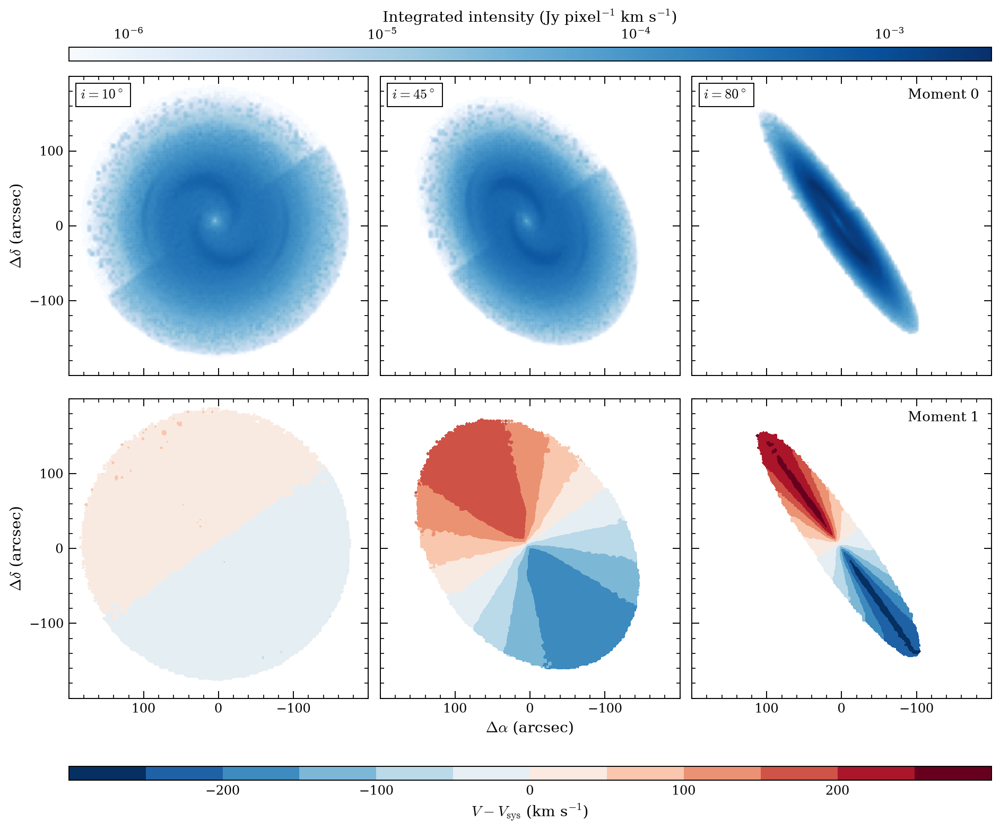
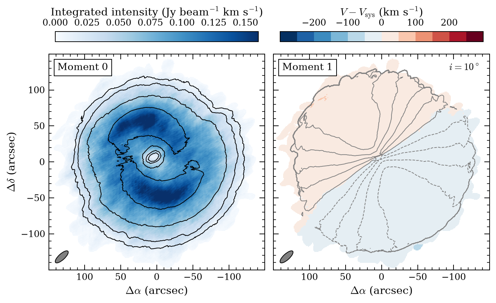
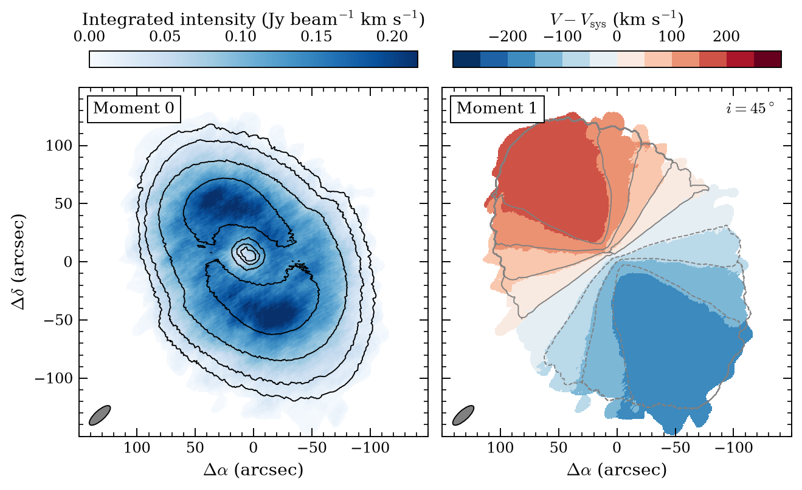
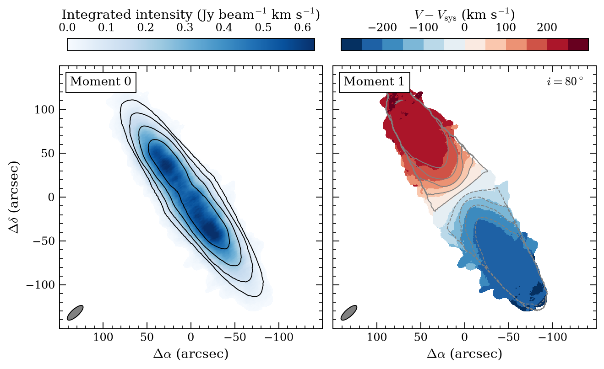
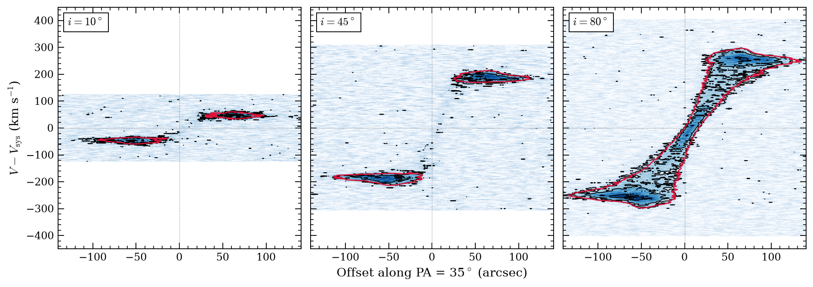

Science motivation
Neutral hydrogen is the best tracer of the dynamics of disc galaxies. The HI disc extends well beyond the stellar one, and its rotation curve remains the most direct probe of dark matter at galactic scales (Walter et al. 2008; de Blok et al. 2008). WALLABY (Koribalski et al. 2020) and MHONGOOSE (de Blok et al. 2024) are already extending this work to thousands of galaxies and to the faint outer discs, and SKA-MID will combine both regimes in a single instrument (Staveley-Smith & Oosterloo 2015).
Only the line-of-sight component of the rotation is measured, however, so the inclination of the disc controls what the data can constrain. This case uses a model with known parameters to make that dependence explicit.
- Recover the HI distribution, velocity field and position–velocity diagram of one galaxy at i = 10°, 45° and 80°.
- Compare each product with the noiseless input model at the same resolution.
Simulation runs
Three 20 min runs, one per inclination, with identical telescope, noise and imaging setup. The band is set to cover the line in each case, so the channel width grows with the projected rotation: 0.98, 2.42 and 3.17 km/s at i = 10°, 45° and 80°.
Telescope
- Array
- SKA-MID-AAstar
- Dishes
- 144 × 15 m
Observation
- Line
- HI 21 cm · Band 2, ≈ 1394 MHz
- Integration
- 1200 s · 256 channels
Imaging
- WSClean
- Briggs robust 1 · multiscale
Noise
- Thermal
- Band 2 AA* SEFD
- rms per channel
- 0.59–1.07 mJy/beam
Galaxy model
The input is model 1 from pyHIARD, the Python HI Artificial and Real Database, provided by Peter Kamphuis (IAA-CSIC). pyHIARD builds artificial HI cubes with known input parameters, designed to test tilted-ring fitting software such as FAT (Kamphuis et al. 2015). The galaxy has a total mass of 2.5 × 1012 M⊙. This is the dynamical, dark-matter-dominated mass that sets the amplitude of the rotation curve, and it makes this a rather massive spiral. The kinematic position angle, measured anticlockwise from north to the receding side, is 35°, so the receding half of the disc lies to the north-east. The systemic velocity is ≈ 5576 km/s and the total HI flux 18.03 Jy km/s. The disc shows a central HI depression, two bright spiral arms and a low-surface-brightness envelope, with an HI radius of ≈ 120″ (46.5 kpc). It is rendered at i = 10°, 45° and 80° with every other parameter fixed.

Results
Moment maps



The three moment-1 maps share one colour scale. Nearly face-on, the maps are the least informative: the projected rotation is only ≈ ±47 km/s (model contours every 10 km/s), and the line width mostly measures the vertical velocity dispersion. At 45° the classic spider diagram appears, with iso-velocity contours that follow the model closely out to the edge of the detected disc. At 80°, every line of sight crosses a large part of the disc, so the intensity-weighted velocity is pulled towards Vsys and underestimates the rotation.
Position–velocity diagrams
Cuts along the major axis (PA = 35°, three pixels wide) through the observed cube, with black contours at 3, 6, 12 and 24σ and the noiseless model at 3σ in red.

The 80° diagram is where the rotation curve is recovered best: a solid-body rise through the centre and a flat part at ≈ ±265 km/s, traced by the observation along the full extent of the model contour. At 45°, the emission along the cut is dominated by the spiral arms at ≈ ±190 km/s, and at 10° by the same arms at only ≈ ±50 km/s. In both, the inner rising part falls below 3σ in the model too, because of the central HI depression.
Takeaways
- Geometry decides what can be measured: near face-on says little about rotation, 45° gives the cleanest velocity field, near edge-on the full rotation curve.
- Moment maps are not enough: at high inclination they underestimate rotation; use PV diagrams or 3D modelling.
- The outer disc is the first to go: match the channel width to the line width to keep faint HI.
- Kinematic samples carry an inclination bias that SKA HI surveys must account for.